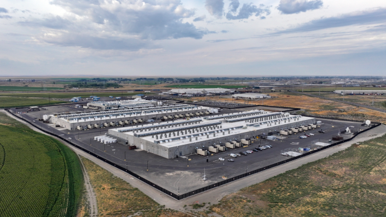

Media Gallery

The Bigger Picture
Since 2021, AI data centers have been popping up across rural America. These facilities power AI applications and services like ChatGPT and Palantir. But behind the promise that new jobs will be added and that wealth will just "trickle down", deviously lies the exploitation of land, natural resources, and energy that will line the pockets of a select few, funded by the lower and middle working class.
The recent emergence of these centers is a direct consequence of late-stage capitalism and technofacism, where only a select few tech oligarchs gain capital and influence over the political system that provides the very permission structure that enables this. Scholars like Yanis Varoufakis have argued that we are entering a technofeudal era, where controlling the infrastructure that powers AI yields more economic power and capital than competing in any free market [1]. This is the motivation driving the arms race between tech oligarchs to build ever more powerful data centers. Essentially, these Big Tech companies, from the top down, charge ordinary working class to exist in the emerging world of artificial intelligence that these very companies build and control.
Rural communities bear the brunt of these impacts. It is no accident that Big Tech targets areas where land is cheap and property taxes are low. Iowa, home to the first recorded Microsoft AI data center, is emblematic of a broader pattern. Local governments are promised jobs and tax revenue; what arrives instead are largely automated facilities employing contract workers in the single digits. Permanent employment is never realized. As scholars of fascism, like Ruth Ben-Ghiat have noted, authoritarian economic structures tend to begin by targeting the most vulnerable and least politically powerful and then expand outward, a technique that comes directly out of the authoritarian playbook [2].
The public health consequences are both immediate and long-term. Data centers running on fossil fuels and diesel generators emit nitrogen oxides and fine particulate matter, pollutants with well-documented links to respiratory illness, cardiovascular disease, and, otherwise preventable death [3]. These effects do not fall evenly across the population. Lower-income rural communities, which often already face reduced access to healthcare and higher baseline rates of chronic disease, absorb disproportionate pollution burdens while seeing little of the promised economic benefit. The cumulative burden, degraded air quality layered on top of economic stagnation, strained local infrastructure, and increased water consumption by cooling systems, constitutes a public health crisis that is largely invisible in national conversations about the real costs of AI.
"We are witnessing the enclosure of digital commons — the transformation of shared computational potential into private infrastructure controlled by a shrinking number of actors." — Adapted from Yanis Varoufakis, Technofeudalism (2023)